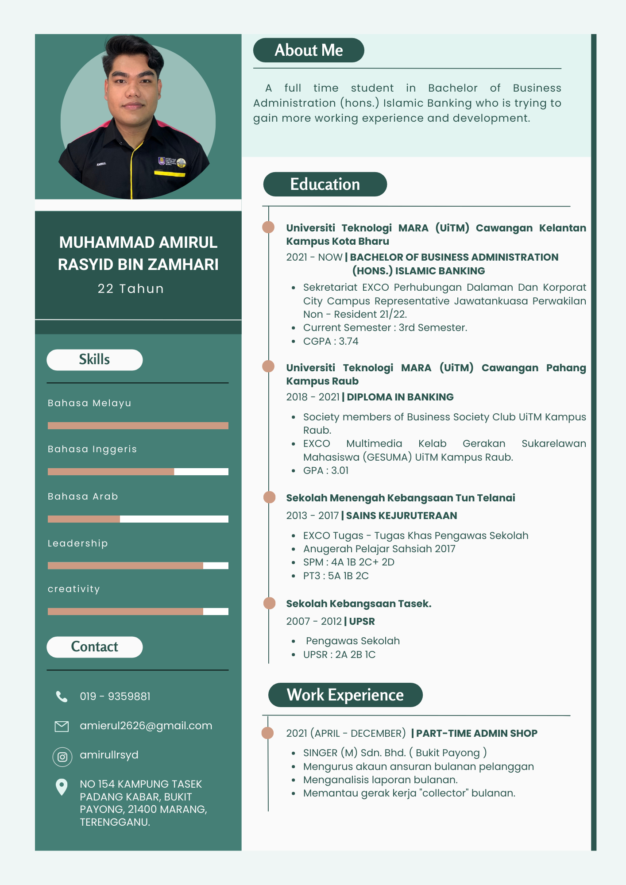

- My Name is Muhammad Amirul Rasyid bin Zamhari.
I've already completed a Diploma in Banking Studies in the last two years.I am currently pursuing a Bachelor of Business Administration (Hons) in Islamic Banking. I have good customer service skills as well as professional etiquette. In terms of work, I am punctual, self-sufficient, and well-organized.Aside from being a full-time student, I also had editing experience, and some of my skills contribute to the growth of editing.
This could be aided by knowledge of the following software and applications:
- Microsoft Office (Words, Excel, and Power Point)
- Adobe Photoshop
- Canva
- Capcut
I have an addiction to seeking out new experiences as I progress, learn, and gain more knowledge in the task at hand. All I can say is that I will do my best to satisfy my client.
- To secure a challenging position in a reputable organization to expand my learnings, knowledge, and skills.
- Secure a responsible career opportunity to fully utilize my training and skills, while making a significant contribution to the success of the company.
- To secure employment with a reputable company, where I can utilize my skills and business studies background to the maximum.
This is my resume,:

Powered by MuhammadAmirulRasyid.2023